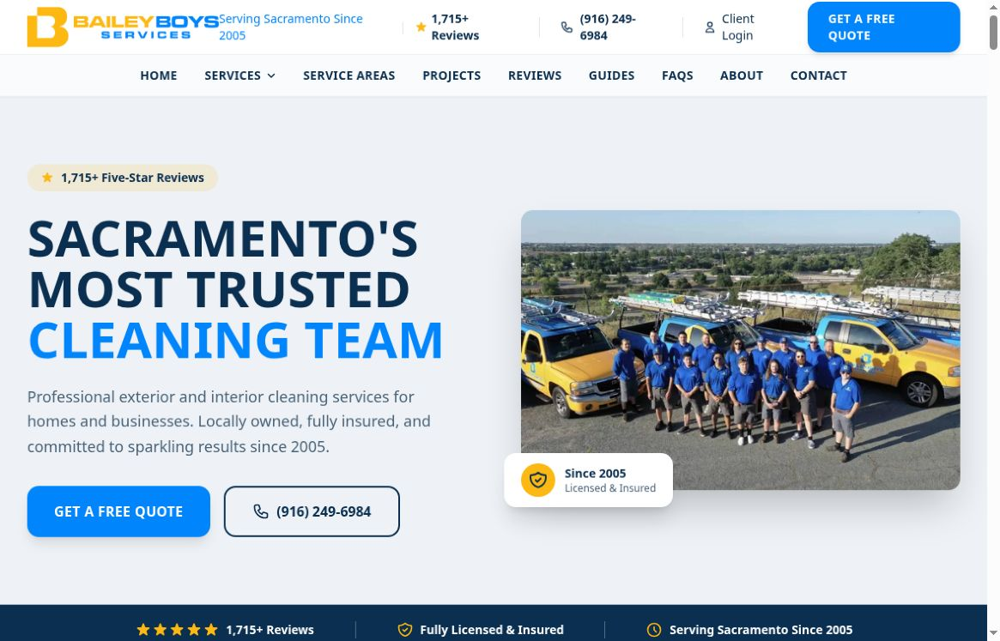

Local Meta ads
Reach nearby people on Facebook and Instagram.
A custom audit / Bailey Boys
We’re Vessel Archive, a local Sacramento marketing team.
A short plan for Bailey Boys Services.
Reach nearby people on Facebook and Instagram.
Real videos, photos and clear messages.
Get found through your Google Business Profile, site and blogs.
What you do well
Your site shows before-and-after work, clear service pages and an easy-to-find phone number. Google shows strong customer feedback.
Small changes can make that strong work easier to trust and act on.
Google business profile ↗
What we found
Our gutter-cleaning search showed Gilbert, Dan Downey and Master’s in the three featured map spots. Check visibility across Orangevale neighborhoods, then strengthen the gutter-service page and business profile. One October 26 desktop search from a San Francisco connection; not a citywide ranking. Google search snapshot ↗
Your main site lists 6105 Main Avenue, suite 7. Your public Jobber site lists suite 5. Visitors should not need to decide which contact details to trust. Confirm the right address before changing either site. Public Jobber site ↗
The homepage says 1,715+ five-star reviews. The linked Google profile shows 1,188 reviews in total. Name the platforms and date behind the larger count so buyers can check it easily. The website total may combine platforms; this is not a false-review claim. Linked Google profile ↗
How we would help
Measure the same searches from Orangevale and Fair Oaks neighborhoods. Improve useful gutter-service content, local job photos and accurate profile details. Avoid promising a ranking.
Confirm the suite number, then align the main site, Jobber site and public listings. Keep each location’s role clear.
Label any combined review total by platform and date. Link each source, and keep five-star counts separate from all-review totals.
Ideas for your next shoot
Show the same camera angle before and after a real local job, with the homeowner’s permission.
Show debris removal and water flowing again. Explain what the crew checks before leaving.
Introduce one technician and show how they protect plants, glass and the customer’s home.
A proposed starting plan / 1 of 2
We’d script, shoot and launch first ads within the first couple of weeks, alongside a focused website rebuild and clear brand direction. Start with real local cleaning results and simple quote pages.
We’d track which videos, offers and audiences bring real calls and quote requests, improve weak ads and send traffic to the new site.
Proposed timing depends on agreed scope, access and approvals.
A proposed starting plan / 2 of 2
We’d create new content around what worked, refresh ads and tighten the site so interested homeowners can take the next step.
Then repeat each month: shoot, launch, learn and improve.
Proposed timing depends on agreed scope, access and approvals.
From one local team to another

Whether we work together or not, we hope this helps. We love seeing Sacramento-area businesses do well. If you’d like, we can talk through the next step.